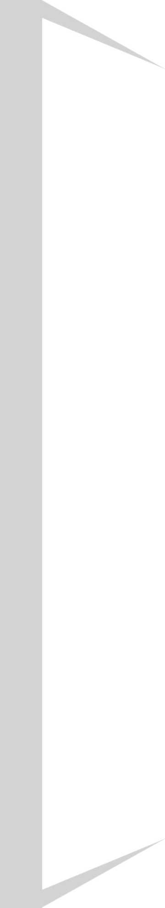
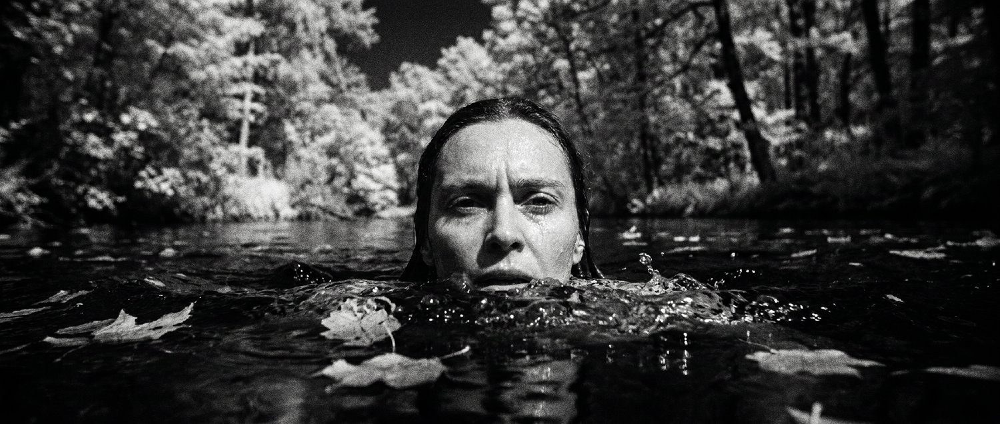

Precise Technical Setup
Select industry-standard cameras, anamorphic or vintage lenses, focal lengths, aperture, white balance, contrast ratios, and film emulation elements such as grain, halation, and saturation.
SYNTHETIC MEDIA STUDIO
When ideas meet the machine,
the impossible takes form.
Synthesizing human vision and artificial intelligence to construct new visual realities.
Generated worlds, films and campaigns — 2023 → now. Hover to explore.
THE STUDIO

HYPRFRAME explores the intersection of human intuition and machine synthesis. Specialized in AI-generated video and motion design, creating visual narratives that shape new perspectives and storytelling.
The studio's DNA, decoded: branding, narrative and AI-powered production.
Building visual and conceptual frameworks that define how a brand feels, speaks, and moves.
Guiding clients through the process of turning loose ideas into coherent, powerful visual statements.
Transforming abstract ideas into strong, original creative concepts that connect with audiences.
Crafting stories that merge human emotion with visual innovation.
Designing the aesthetic and narrative core of each project through image, rhythm, and emotion.
From ideation to final cut — directing, shooting, and crafting visual pieces with cinematic precision.
Exploring new visual territories through artificial intelligence — merging technology and creative intuition.
An interactive web tool designed for filmmakers, cinematographers, and AI creators to translate real-world camera packages into LLM-ready prompts.

Key Capabilities
Select industry-standard cameras, anamorphic or vintage lenses, focal lengths, aperture, white balance, contrast ratios, and film emulation elements such as grain, halation, and saturation.
Outputs both a Semantic Prompt optimized for AI text-to-image/video tools and a Technical JSON for structured data pipelines.
START A PROJECT